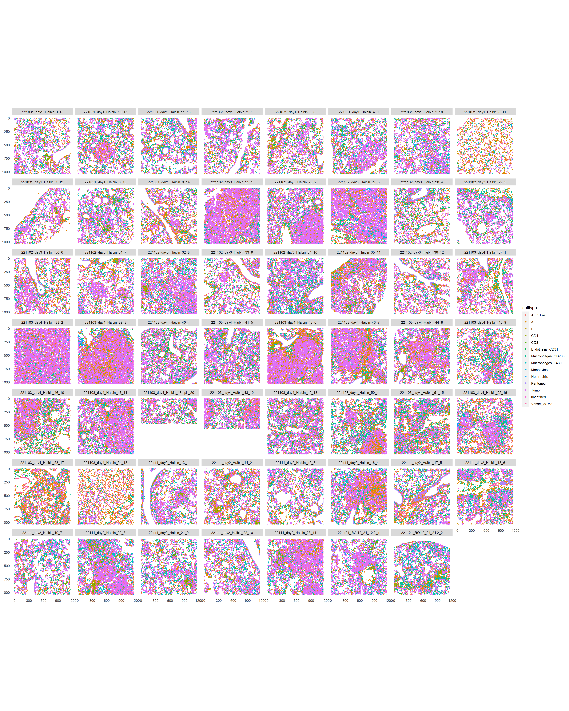

IMC data analysis workflow
Tess and Tural
University of Bern, DBMR, Visceral and Transplantation Surgery lab
Last updated: 2023-05-30
Checks: 6 1
Knit directory: 230515_workflowr_haibin/
This reproducible R Markdown analysis was created with workflowr (version 1.7.0). The Checks tab describes the reproducibility checks that were applied when the results were created. The Past versions tab lists the development history.
Great! Since the R Markdown file has been committed to the Git repository, you know the exact version of the code that produced these results.
Great job! The global environment was empty. Objects defined in the global environment can affect the analysis in your R Markdown file in unknown ways. For reproduciblity it’s best to always run the code in an empty environment.
The command set.seed(20230515) was run prior to running
the code in the R Markdown file. Setting a seed ensures that any results
that rely on randomness, e.g. subsampling or permutations, are
reproducible.
Great job! Recording the operating system, R version, and package versions is critical for reproducibility.
Nice! There were no cached chunks for this analysis, so you can be confident that you successfully produced the results during this run.
Using absolute paths to the files within your workflowr project makes it difficult for you and others to run your code on a different machine. Change the absolute path(s) below to the suggested relative path(s) to make your code more reproducible.
| absolute | relative |
|---|---|
| C:/Users/IMC Platform laptop/Users2/Tess/SteinbockCellSegmentation/221130_haibin/230515_workflowr_haibin | . |
Great! You are using Git for version control. Tracking code development and connecting the code version to the results is critical for reproducibility.
The results in this page were generated with repository version 145c500. See the Past versions tab to see a history of the changes made to the R Markdown and HTML files.
Note that you need to be careful to ensure that all relevant files for
the analysis have been committed to Git prior to generating the results
(you can use wflow_publish or
wflow_git_commit). workflowr only checks the R Markdown
file, but you know if there are other scripts or data files that it
depends on. Below is the status of the Git repository when the results
were generated:
Ignored files:
Ignored: .Rhistory
Ignored: .Rproj.user/
Ignored: analysis/0_prep_data_cache/
Ignored: analysis/1_QC_mask_cache/
Ignored: analysis/2_IMCA_cell_annotation_cache/
Ignored: analysis/3_dim_red_cache/
Ignored: analysis/4_img_vis_cache/
Ignored: analysis/6_statistics_cache/
Untracked files:
Untracked: 3_communities_v2.png
Untracked: 6_communities_v3.png
Untracked: analysis/6_statistics.Rmd
Untracked: data/images.csv
Untracked: data/images.rds
Untracked: data/img/
Untracked: data/intensities/
Untracked: data/masks.rds
Untracked: data/masks/
Untracked: data/neighbors/
Untracked: data/panel.csv
Untracked: data/raw/
Untracked: data/regionprops/
Untracked: data/sample_metadata.xlsx
Untracked: data/sample_metadata_shortened.xlsx
Untracked: output/rffit.rds
Untracked: output/spe0.rds
Untracked: output/spe1.rds
Untracked: output/spe3.rds
Untracked: output/spe4.rds
Untracked: output/spe_ca.rds
Unstaged changes:
Deleted: analysis/about.Rmd
Deleted: analysis/license.Rmd
Note that any generated files, e.g. HTML, png, CSS, etc., are not included in this status report because it is ok for generated content to have uncommitted changes.
These are the previous versions of the repository in which changes were
made to the R Markdown (analysis/5_spatial_vis.Rmd) and
HTML (docs/5_spatial_vis.html) files. If you’ve configured
a remote Git repository (see ?wflow_git_remote), click on
the hyperlinks in the table below to view the files as they were in that
past version.
| File | Version | Author | Date | Message |
|---|---|---|---|---|
| Rmd | 145c500 | Tess Brodie | 2023-05-30 | wflow_publish("analysis/5_spatial_vis.Rmd", delete_cache = TRUE) |
Spatial analysis
Load packages
library(SpatialExperiment)Warning: multiple methods tables found for 'aperm'Warning: replacing previous import 'BiocGenerics::aperm' by
'DelayedArray::aperm' when loading 'SummarizedExperiment'Warning: replacing previous import 'BiocGenerics::aperm' by
'DelayedArray::aperm' when loading 'HDF5Array'library(imcRtools)
library(ggplot2)Warning: package 'ggplot2' was built under R version 4.2.3library(viridis)Warning: package 'viridis' was built under R version 4.2.3Warning: package 'viridisLite' was built under R version 4.2.3library(igraph)Warning: package 'igraph' was built under R version 4.2.3library(pheatmap)
library(tidyverse)Warning: package 'tibble' was built under R version 4.2.3Warning: package 'dplyr' was built under R version 4.2.3library(lisaClust)
library(spicyR)
library(circlize)
library(RColorBrewer)
library(cytomapper)Warning: package 'EBImage' was built under R version 4.2.3library(patchwork)
library(tidyverse)
library(scales)
library(dittoSeq)
library(BiocParallel)Load data
Spatial interaction graphs (only run once- very long)
Save data with interaction graphs
Load data
spe <- readRDS(file.path("output", "spe4.rds"))Define colors
color_vectors <- list()
#For the ROI
ROI <- setNames(dittoColors(reps = 1)[seq_along(unique(spe$sample_id))],
unique(spe$ROI))
#For the patient ID
patient_id <- setNames(brewer.pal(length(unique(spe$patient_id)), name = "Set1"),
unique(spe$patient_id))
#For the sample ID
sample_id <- setNames(dittoColors(reps = 1)[seq_along(unique(spe$sample_id))],
unique(spe$sample_id))
#For the condition
condition <- setNames(brewer.pal(length(unique(spe$condition)), name = "Set2"),
unique(spe$condition))Warning in brewer.pal(length(unique(spe$condition)), name = "Set2"): minimal value for n is 3, returning requested palette with 3 different levels#For the annotation
annotation <- setNames(brewer.pal(length(unique(spe$annotation)), name = "Set3"),
unique(spe$annotation))
#For cell type
celltype <- setNames(dittoColors(reps = 1)[seq_along(unique(spe$sample_id))],
unique(spe$celltype))
color_vectors$ROI <- ROI
color_vectors$patient_id <- patient_id
color_vectors$sample_id <- sample_id
color_vectors$condition <- condition
color_vectors$annotation <- annotation
color_vectors$celltype <- celltype
metadata(spe)$color_vectors <- color_vectorsInteraction graphs
# steinbock interaction graph
plotSpatial(spe[,spe$sample_id == "221031_day1_Haibin_1_6"],
node_color_by = "celltype",
img_id = "sample_id",
draw_edges = TRUE,
colPairName = "neighborhood",
nodes_first = FALSE,
edge_color_fix = "grey") +
scale_color_manual(values = metadata(spe)$color_vectors$celltype) +
ggtitle("steinbock interaction graph")# knn interaction graph
plotSpatial(spe[,spe$sample_id == "221031_day1_Haibin_1_6"],
node_color_by = "celltype",
img_id = "sample_id",
draw_edges = TRUE,
colPairName = "knn_interaction_graph",
nodes_first = FALSE,
edge_color_fix = "grey") +
scale_color_manual(values = metadata(spe)$color_vectors$celltype) +
ggtitle("knn interaction graph")# expansion interaction graph
plotSpatial(spe[,spe$sample_id == "221031_day1_Haibin_1_6"],
node_color_by = "celltype",
img_id = "sample_id",
draw_edges = TRUE,
colPairName = "expansion_interaction_graph",
nodes_first = FALSE,
directed = FALSE,
edge_color_fix = "grey") +
scale_color_manual(values = metadata(spe)$color_vectors$celltype) +
ggtitle("expansion interaction graph")# delaunay interaction graph
plotSpatial(spe[,spe$sample_id == "221031_day1_Haibin_1_6"],
node_color_by = "celltype",
img_id = "sample_id",
draw_edges = TRUE,
colPairName = "delaunay_interaction_graph",
nodes_first = FALSE,
edge_color_fix = "grey") +
scale_color_manual(values = metadata(spe)$color_vectors$celltype) +
ggtitle("delaunay interaction graph")plotSpatial(spe[,spe$sample_id == "221031_day1_Haibin_1_6"],
node_color_by = "E-cadherin",
assay_type = "exprs",
img_id = "sample_id",
draw_edges = TRUE,
colPairName = "expansion_interaction_graph",
nodes_first = FALSE,
node_size_by = "area",
directed = FALSE,
edge_color_fix = "grey") +
scale_size_continuous(range = c(0.1, 2)) +
ggtitle("E-cadherin expression")Plot cell types
plotSpatial(spe,
node_color_by = "celltype",
img_id = "sample_id",
node_size_fix = 0.5) 
scale_color_manual(values = metadata(spe)$color_vectors$celltype)<ggproto object: Class ScaleDiscrete, Scale, gg>
aesthetics: colour
axis_order: function
break_info: function
break_positions: function
breaks: waiver
call: call
clone: function
dimension: function
drop: TRUE
expand: waiver
get_breaks: function
get_breaks_minor: function
get_labels: function
get_limits: function
guide: legend
is_discrete: function
is_empty: function
labels: waiver
limits: function
make_sec_title: function
make_title: function
map: function
map_df: function
n.breaks.cache: NULL
na.translate: TRUE
na.value: grey50
name: waiver
palette: function
palette.cache: NULL
position: left
range: environment
rescale: function
reset: function
scale_name: manual
train: function
train_df: function
transform: function
transform_df: function
super: <ggproto object: Class ScaleDiscrete, Scale, gg>Spatial community analysis
spe$tumor_stroma <- ifelse(spe$celltype == "Tumor", "Tumor", "Stroma")
spe <- detectCommunity(spe,
colPairName = "neighborhood",
size_threshold = 10,
group_by = "tumor_stroma",
BPPARAM = SerialParam(RNGseed = 220819))Plot communities of tumor and notumor
plotSpatial(spe[,spe$celltype == "Tumor"],
node_color_by = "spatial_community",
img_id = "sample_id",
node_size_fix = 0.5) +
theme(legend.position = "none") +
ggtitle("Spatial tumor communities") 
# scale_color_manual(values = rev(colors()))Plot nontumor communities
plotSpatial(spe[,spe$celltype != "Tumor"],
node_color_by = "spatial_community",
img_id = "sample_id",
node_size_fix = 0.5) +
theme(legend.position = "none") +
ggtitle("Spatial non-tumor communities") 
# scale_color_manual(values = rev(colors()))Plot nontumor community heatmap
for_plot <- prop.table(table(spe[,spe$celltype != "Tumor"]$spatial_community,
spe[,spe$celltype != "Tumor"]$celltype), margin = 1)
pheatmap(for_plot, color = viridis(100), show_rownames = FALSE)for_plot <- prop.table(table(spe$spatial_community,
spe$celltype), margin = 1)
pheatmap(for_plot, color = viridis(100), show_rownames = FALSE)Cellular neighborhood analysis
Cn_1 is neighborhoods made by cell types
# By celltypes
spe <- aggregateNeighbors(spe, colPairName = "knn_interaction_graph",
aggregate_by = "metadata", count_by = "celltype")
set.seed(322)
cn_cell1 <- kmeans(spe$aggregatedNeighbors, centers = 4)
set.seed(322)
cn_cell2 <- kmeans(spe$aggregatedNeighbors, centers = 5)
set.seed(322)
cn_cell3 <- kmeans(spe$aggregatedNeighbors, centers = 6)spe$cn_celltypes <- as.factor(cn_cell3$cluster)
plotSpatial(spe,
node_color_by = "cn_celltypes",
img_id = "sample_id",
node_size_fix = 0.5) +
scale_color_brewer(palette = "Set3")for_plot <- colData(spe) %>% as_tibble() %>%
group_by(cn_celltypes, celltype) %>%
summarize(count = n()) %>%
mutate(freq = count / sum(count)) %>%
pivot_wider(id_cols = cn_celltypes, names_from = celltype,
values_from = freq, values_fill = 0) %>%
ungroup() %>%
select(-cn_celltypes)`summarise()` has grouped output by 'cn_celltypes'. You can override using the
`.groups` argument.pheatmap(for_plot, color = colorRampPalette(c("dark blue", "white", "dark red"))(100),
scale = "column")#Double split barplots
plotdata <- as.data.frame(colData(spe)[, c("cn_celltypes", "annotation", "condition")])
plotdata <- as.data.frame(table(plotdata))
ggplot(plotdata, aes(x = annotation, y = Freq, fill = condition)) +
geom_col() +
facet_grid( ~ cn_celltypes)
ggplot(plotdata, aes(x = annotation, y = Freq, fill = condition)) +
geom_col() +
facet_wrap( ~ cn_celltypes, scales = "free", ncol = 14)
Cn2 is neighborhoods made by target expression in 20 nearest neighbors
# By expression
spe <- aggregateNeighbors(spe, colPairName = "knn_interaction_graph",
aggregate_by = "expression", assay_type = "exprs",
subset_row = rowData(spe)$use_channel)
cn_exp <- kmeans(spe$mean_aggregatedExpression, centers = 6)
spe$cn_expression <- as.factor(cn_exp$cluster)
plotSpatial(spe,
node_color_by = "cn_expression",
img_id = "sample_id",
node_size_fix = 0.5) +
scale_color_brewer(palette = "Set3")for_plot <- colData(spe) %>% as_tibble() %>%
group_by(cn_expression, celltype) %>%
summarize(count = n()) %>%
mutate(freq = count / sum(count)) %>%
pivot_wider(id_cols = cn_expression, names_from = celltype,
values_from = freq, values_fill = 0) %>%
ungroup() %>%
select(-cn_expression)`summarise()` has grouped output by 'cn_expression'. You can override using the
`.groups` argument.pheatmap(for_plot, color = colorRampPalette(c("dark blue", "white", "dark red"))(100),
scale = "column")Cellular neighborhood analysis: lisaClust package computes local indicators of spatial ###associations (LISA) functions and cluster cells based on those
Does not work yet
Spatial context analysis (takes a while)
# Generate k-nearest neighbor graph for SC detection (k=40)
spe <- buildSpatialGraph(spe, img_id = "sample_id",
type = "knn",
name = "knn_spatialcontext_graph",
k = 40)Warning in (function (to_check, X, clust_centers, clust_info, dtype, nn, :
detected tied distances to neighbors, see ?'BiocNeighbors-ties'Warning in (function (to_check, X, clust_centers, clust_info, dtype, nn, :
detected tied distances to neighbors, see ?'BiocNeighbors-ties'Warning in (function (to_check, X, clust_centers, clust_info, dtype, nn, :
detected tied distances to neighbors, see ?'BiocNeighbors-ties'Warning in (function (to_check, X, clust_centers, clust_info, dtype, nn, :
detected tied distances to neighbors, see ?'BiocNeighbors-ties'Warning in (function (to_check, X, clust_centers, clust_info, dtype, nn, :
detected tied distances to neighbors, see ?'BiocNeighbors-ties'Warning in (function (to_check, X, clust_centers, clust_info, dtype, nn, :
detected tied distances to neighbors, see ?'BiocNeighbors-ties'Warning in (function (to_check, X, clust_centers, clust_info, dtype, nn, :
detected tied distances to neighbors, see ?'BiocNeighbors-ties'Warning in (function (to_check, X, clust_centers, clust_info, dtype, nn, :
detected tied distances to neighbors, see ?'BiocNeighbors-ties'Warning in (function (to_check, X, clust_centers, clust_info, dtype, nn, :
detected tied distances to neighbors, see ?'BiocNeighbors-ties'Warning in (function (to_check, X, clust_centers, clust_info, dtype, nn, :
detected tied distances to neighbors, see ?'BiocNeighbors-ties'Warning in (function (to_check, X, clust_centers, clust_info, dtype, nn, :
detected tied distances to neighbors, see ?'BiocNeighbors-ties'Warning in (function (to_check, X, clust_centers, clust_info, dtype, nn, :
detected tied distances to neighbors, see ?'BiocNeighbors-ties'Warning in (function (to_check, X, clust_centers, clust_info, dtype, nn, :
detected tied distances to neighbors, see ?'BiocNeighbors-ties'Warning in (function (to_check, X, clust_centers, clust_info, dtype, nn, :
detected tied distances to neighbors, see ?'BiocNeighbors-ties'The returned object is ordered by the 'sample_id' entry.# Aggregate based on clustered_neighbors
spe <- aggregateNeighbors(spe,
colPairName = "knn_spatialcontext_graph",
aggregate_by = "metadata",
count_by = "cn_celltypes",
name = "aggregatedNeighborhood")
# Detect spatial contexts
spe <- detectSpatialContext(spe,
entry = "aggregatedNeighborhood",
threshold = 0.90,
name = "spatial_context")
# Define SC color scheme
col_SC <- setNames(colorRampPalette(brewer.pal(9, "Paired"))(length(unique(spe$spatial_context))),
sort(unique(spe$spatial_context)))
# Visualize spatial contexts on images
plotSpatial(spe,
node_color_by = "spatial_context",
img_id = "sample_id",
node_size_fix = 0.5,
colPairName = "knn_spatialcontext_graph") +
scale_color_manual(values = col_SC)# Compare CN and SC for one patient
p1 <- plotSpatial(spe[,spe$sample_id == "221031_day1_Haibin_1_6"],
node_color_by = "cn_celltypes",
img_id = "sample_id",
node_size_fix = 0.5,
colPairName = "knn_interaction_graph") +
scale_color_brewer(palette = "Set3")
p2 <- plotSpatial(spe[,spe$sample_id == "221031_day1_Haibin_1_6"],
node_color_by = "spatial_context",
img_id = "sample_id",
node_size_fix = 0.5,
colPairName = "knn_spatialcontext_graph") +
scale_color_manual(values = col_SC, limits = force)
p1 + p2## Filter spatial contexts
# By number of group entries
spe <- filterSpatialContext(spe,
entry = "spatial_context",
group_by = "patient_id",
group_threshold = 3)
plotSpatial(spe,
node_color_by = "spatial_context_filtered",
img_id = "sample_id",
node_size_fix = 0.5,
colPairName = "knn_spatialcontext_graph") +
scale_color_manual(values = col_SC, limits = force)# By number of group entries and total number of cells
spe <- filterSpatialContext(spe,
entry = "spatial_context",
group_by = "patient_id",
group_threshold = 3,
cells_threshold = 100)
plotSpatial(spe,
node_color_by = "spatial_context_filtered",
img_id = "sample_id",
node_size_fix = 0.5,
colPairName = "knn_spatialcontext_graph") +
scale_color_manual(values = col_SC, limits = force)## Plot spatial context graph
# Colored by name and size by n_cells
plotSpatialContext(spe,
entry = "spatial_context_filtered",
group_by = "sample_id",
node_color_by = "name",
node_size_by = "n_cells",
node_label_color_by = "name")# Colored by n_cells and size by n_group
plotSpatialContext(spe,
entry = "spatial_context_filtered",
group_by = "sample_id",
node_color_by = "n_cells",
node_size_by = "n_group",
node_label_color_by = "n_cells") +
scale_color_viridis()Patch detection
spe <- patchDetection(spe,
patch_cells = spe$celltype == "Tumor",
img_id = "sample_id",
expand_by = 1,
min_patch_size = 10,
colPairName = "neighborhood")The returned object is ordered by the 'sample_id' entry.plotSpatial(spe,
node_color_by = "patch_id",
img_id = "sample_id",
node_size_fix = 0.5) +
theme(legend.position = "none") 
# scale_color_manual(values = colors())colData(spe) %>% as_tibble() %>%
group_by(patch_id, sample_id) %>%
summarize(Tcell_count = sum(celltype == "CD8" | celltype == "CD4"),
patch_size = n(),
Tcell_freq = Tcell_count / patch_size) %>%
ggplot() +
geom_point(aes(log10(patch_size), Tcell_freq, color = sample_id)) +
theme_classic()`summarise()` has grouped output by 'patch_id'. You can override using the
`.groups` argument.
patch_size <- patchSize(spe, "patch_id")
patch_size <- merge(patch_size,
colData(spe)[match(patch_size$patch_id, spe$patch_id),],
by = "patch_id")
ggplot(as.data.frame(patch_size)) +
geom_boxplot(aes(patient_id, log10(size))) +
geom_point(aes(patient_id, log10(size)))Warning: Removed 1 rows containing non-finite values (`stat_boxplot()`).Warning: Removed 1 rows containing missing values (`geom_point()`).spe <- minDistToCells(spe,
x_cells = !is.na(spe$patch_id),
img_id = "sample_id")The returned object is ordered by the 'sample_id' entry.plotSpatial(spe,
node_color_by = "distToCells",
img_id = "sample_id",
node_size_fix = 0.5) +
scale_color_gradient2(low = "dark blue", mid = "white", high = "dark red")
Distance histograms
library(ggridges)
ggplot(as.data.frame(colData(spe))) +
geom_density_ridges(aes(distToCells, celltype, fill = celltype)) +
geom_vline(xintercept = 0, color = "dark red", linewidth = 2) +
scale_fill_manual(values = metadata(spe)$color_vectors$celltype)Picking joint bandwidth of 5.38Warning: Removed 2995 rows containing non-finite values
(`stat_density_ridges()`).Interaction analysis
out <- testInteractions(spe,
group_by = "sample_id",
label = "celltype",
colPairName = "neighborhood")
head(out)DataFrame with 6 rows and 10 columns
group_by from_label to_label ct p_gt
<character> <character> <character> <numeric> <numeric>
1 221031_day1_Haibin_1.. AEC_like AEC_like 0.2435233 0.333666
2 221031_day1_Haibin_1.. AEC_like AF 0.5829016 1.000000
3 221031_day1_Haibin_1.. AEC_like B 0.0544041 0.842158
4 221031_day1_Haibin_1.. AEC_like CD4 0.0207254 0.909091
5 221031_day1_Haibin_1.. AEC_like CD8 0.0181347 1.000000
6 221031_day1_Haibin_1.. AEC_like Endothelial_CD31 0.2253886 0.168831
p_lt interaction p sig sigval
<numeric> <logical> <numeric> <logical> <numeric>
1 0.716284 TRUE 0.333666 FALSE 0
2 0.001998 FALSE 0.001998 TRUE -1
3 0.202797 FALSE 0.202797 FALSE 0
4 0.170829 FALSE 0.170829 FALSE 0
5 0.002997 FALSE 0.002997 TRUE -1
6 0.863137 TRUE 0.168831 FALSE 0out %>% as_tibble() %>%
group_by(from_label, to_label) %>%
summarize(sum_sigval = sum(sigval, na.rm = TRUE)) %>%
ggplot() +
geom_tile(aes(from_label, to_label, fill = sum_sigval)) +
scale_fill_gradient2(low = muted("blue"), mid = "white", high = muted("red")) +
theme(axis.text.x = element_text(angle = 45, hjust = 1))`summarise()` has grouped output by 'from_label'. You can override using the
`.groups` argument.out2 <- testInteractions(spe,
group_by = "sample_id",
label = "celltype",
colPairName = "neighborhood",
method = "patch",
patch_size = 3)
out2 %>% as_tibble() %>%
group_by(from_label, to_label) %>%
summarize(sum_sigval = sum(sigval, na.rm = TRUE)) %>%
ggplot() +
geom_tile(aes(from_label, to_label, fill = sum_sigval)) +
scale_fill_gradient2(low = muted("blue"), mid = "white", high = muted("red")) +
theme(axis.text.x = element_text(angle = 45, hjust = 1))`summarise()` has grouped output by 'from_label'. You can override using the
`.groups` argument.Save data
saveRDS(spe, file.path("output", "spe5.rds"))
sessionInfo()R version 4.2.2 (2022-10-31 ucrt)
Platform: x86_64-w64-mingw32/x64 (64-bit)
Running under: Windows 10 x64 (build 19044)
Matrix products: default
locale:
[1] LC_COLLATE=English_Switzerland.utf8 LC_CTYPE=English_Switzerland.utf8
[3] LC_MONETARY=English_Switzerland.utf8 LC_NUMERIC=C
[5] LC_TIME=English_Switzerland.utf8
attached base packages:
[1] stats4 stats graphics grDevices utils datasets methods
[8] base
other attached packages:
[1] ggridges_0.5.4 BiocParallel_1.32.6
[3] dittoSeq_1.8.1 scales_1.2.1
[5] patchwork_1.1.2 cytomapper_1.10.1
[7] EBImage_4.40.1 RColorBrewer_1.1-3
[9] circlize_0.4.15 spicyR_1.8.0
[11] lisaClust_1.4.0 lubridate_1.9.2
[13] forcats_1.0.0 stringr_1.5.0
[15] dplyr_1.1.2 purrr_1.0.1
[17] readr_2.1.4 tidyr_1.3.0
[19] tibble_3.2.1 tidyverse_2.0.0
[21] pheatmap_1.0.12 igraph_1.4.2
[23] viridis_0.6.3 viridisLite_0.4.2
[25] ggplot2_3.4.2 imcRtools_1.7.0
[27] SpatialExperiment_1.8.1 SingleCellExperiment_1.20.1
[29] SummarizedExperiment_1.28.0 Biobase_2.56.0
[31] GenomicRanges_1.48.0 GenomeInfoDb_1.34.9
[33] IRanges_2.30.0 S4Vectors_0.34.0
[35] BiocGenerics_0.44.0 MatrixGenerics_1.10.0
[37] matrixStats_0.62.0 workflowr_1.7.0
loaded via a namespace (and not attached):
[1] utf8_1.2.3 shinydashboard_0.7.2
[3] R.utils_2.12.2 lme4_1.1-33
[5] tidyselect_1.2.0 htmlwidgets_1.6.2
[7] grid_4.2.2 DropletUtils_1.18.1
[9] munsell_0.5.0 codetools_0.2-19
[11] units_0.8-2 DT_0.27
[13] withr_2.5.0 spatstat.random_3.1-5
[15] colorspace_2.1-0 highr_0.10
[17] knitr_1.42 rstudioapi_0.14
[19] tensor_1.5 labeling_0.4.2
[21] git2r_0.32.0 GenomeInfoDbData_1.2.9
[23] polyclip_1.10-4 bit64_4.0.5
[25] farver_2.1.1 rhdf5_2.42.1
[27] rprojroot_2.0.3 vctrs_0.6.2
[29] generics_0.1.3 xfun_0.39
[31] timechange_0.2.0 R6_2.5.1
[33] ggbeeswarm_0.7.2 graphlayouts_1.0.0
[35] locfit_1.5-9.7 concaveman_1.1.0
[37] scam_1.2-14 bitops_1.0-7
[39] rhdf5filters_1.10.1 spatstat.utils_3.0-3
[41] cachem_1.0.8 RTriangle_1.6-0.12
[43] DelayedArray_0.22.0 promises_1.2.0.1
[45] vroom_1.6.3 ggraph_2.1.0
[47] beeswarm_0.4.0 gtable_0.3.3
[49] beachmat_2.14.2 goftest_1.2-3
[51] processx_3.8.1 tidygraph_1.2.3
[53] rlang_1.1.1 systemfonts_1.0.4
[55] GlobalOptions_0.1.2 splines_4.2.2
[57] spatstat.geom_3.2-1 yaml_2.3.7
[59] abind_1.4-5 httpuv_1.6.11
[61] tools_4.2.2 ellipsis_0.3.2
[63] spatstat.core_2.4-4 raster_3.6-20
[65] jquerylib_0.1.4 proxy_0.4-27
[67] Rcpp_1.0.10 sparseMatrixStats_1.10.0
[69] zlibbioc_1.42.0 classInt_0.4-9
[71] RCurl_1.98-1.7 ps_1.7.5
[73] rpart_4.1.19 deldir_1.0-6
[75] cowplot_1.1.1 ggrepel_0.9.3
[77] fs_1.6.2 magrittr_2.0.3
[79] data.table_1.14.8 magick_2.7.4
[81] lmerTest_3.1-3 whisker_0.4.1
[83] hms_1.1.3 mime_0.12
[85] fftwtools_0.9-11 evaluate_0.21
[87] xtable_1.8-4 jpeg_0.1-10
[89] shape_1.4.6 gridExtra_2.3
[91] compiler_4.2.2 V8_4.3.0
[93] KernSmooth_2.23-20 crayon_1.5.2
[95] minqa_1.2.5 R.oo_1.25.0
[97] htmltools_0.5.4 mgcv_1.8-41
[99] later_1.3.1 tzdb_0.4.0
[101] tiff_0.1-11 DBI_1.1.3
[103] tweenr_2.0.2 MASS_7.3-58.1
[105] boot_1.3-28.1 sf_1.0-12
[107] Matrix_1.5-3 cli_3.6.0
[109] R.methodsS3_1.8.2 parallel_4.2.2
[111] pkgconfig_2.0.3 getPass_0.2-2
[113] numDeriv_2016.8-1.1 sp_1.6-0
[115] spatstat.sparse_3.0-1 terra_1.7-29
[117] scuttle_1.8.4 svglite_2.1.1
[119] vipor_0.4.5 bslib_0.4.2
[121] dqrng_0.3.0 XVector_0.36.0
[123] callr_3.7.3 digest_0.6.31
[125] spatstat.data_3.0-1 rmarkdown_2.21
[127] edgeR_3.40.2 distances_0.1.9
[129] DelayedMatrixStats_1.20.0 curl_5.0.0
[131] shiny_1.7.4 nloptr_2.0.3
[133] rjson_0.2.21 nlme_3.1-162
[135] lifecycle_1.0.3 jsonlite_1.8.4
[137] Rhdf5lib_1.20.0 BiocNeighbors_1.16.0
[139] limma_3.54.2 fansi_1.0.4
[141] pillar_1.9.0 lattice_0.20-45
[143] fastmap_1.1.1 httr_1.4.6
[145] glue_1.6.2 png_0.1-8
[147] svgPanZoom_0.3.4 bit_4.0.5
[149] ggforce_0.4.1 class_7.3-21
[151] stringi_1.7.12 sass_0.4.6
[153] HDF5Array_1.26.0 nnls_1.4
[155] e1071_1.7-13